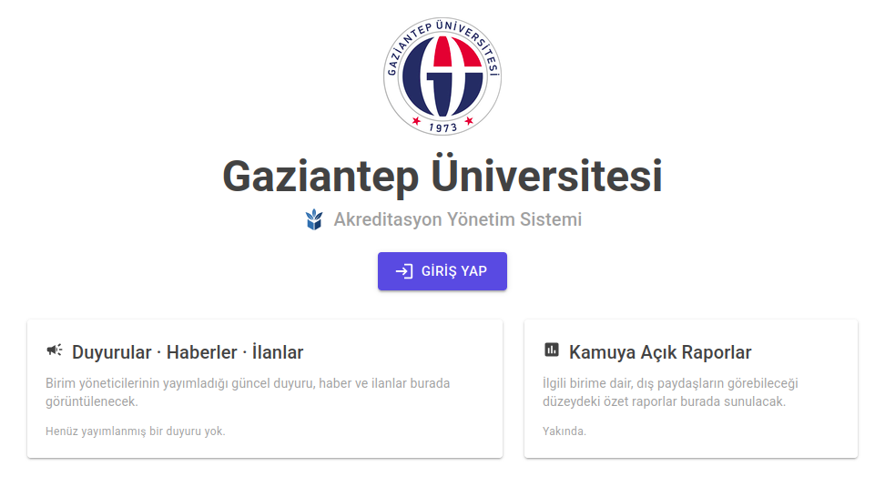

Proje Özeti
İnşa edilen bu sistem, yalnızca tek bir kuruluşa (ör. MÜDEK) hizmet eden statik bir araç değil; yapılandırılabilir bir akreditasyon çerçeve motorudur. YÖKAK çatısı altındaki MÜDEK, HEPDAK, FEDEK, KİDR gibi tüm yetkili kuruluşlar aynı Çıktı Temelli Eğitim (OBE) omurgasını paylaşır. Sistem, değişen ölçüt setlerini ve rapor şablonlarını kodla değil, sisteme yüklenen veri tabanlı "çerçeve paketleri" ile yönetir.
İki Katmanlı Mimari Modeli
Sistem, değişmez bir çekirdek ve esnek bir yapılandırma katmanı olmak üzere iki temel katmandan oluşur:
- Değişmez Çekirdek: OBE omurgası, kanıt havuzu, çok kiracılılık (multi-tenancy) ve rol bazlı erişim kontrolü (RBAC).
- Değişen Katman (Çerçeve Paketleri): Ölçüt ağacı, çıktı setleri, rapor şablonları, eşleştirme şablonları ve kuruluşa özgü uzantı noktaları.
Temel İşlevsel Modüller
- Program tanımı ve kuruluş çıktı eşleştirmesi.
- OBS/Bologna entegrasyonlu müfredat ve ders kataloğu yönetimi.
- Deterministik kurallarla çalışan ölçme-değerlendirme motoru ve ulaşım hesabı.
- Polimorfik, versiyonlu ve denetlenebilir kanıt (doküman) havuzu.
- Yapay zekâ ile desteklenen anket ve paydaş geri bildirimi analizi.
- PUKÖ (Planla-Uygula-Kontrol-Önlem) döngüsü ile sürekli iyileştirme takibi.
- Çerçeve paketinden gelen şablonlara dayalı otomatik Özdeğerlendirme Raporu (ÖDR) üreteci.
Yapay Zekâ (AI) Katmanı
Yapay zekâ hiçbir zaman kayıt sistemine doğrudan yazmaz; ölçme sayıları ve kanıtlar deterministik kalır. AI yalnızca yarı otomatik eşleme, ÖDR taslağı üretimi, boşluk analizi ve açık uçlu anket değerlendirmeleri için öneriler sunar. Kiracılar (üniversiteler) arası kesin izolasyon (tenant-isolated RAG) sağlanır ve kurumlar arası eğitim yapılmaz.
Teknik Altyapı ve Hedefler
Sistem .NET tabanlı modüler monolit mimari ile geliştirilmekte olup, veritabanı olarak PostgreSQL ve RAG yapısı için vektör veritabanı kullanmaktadır. MVP (Minimum Uygulanabilir Ürün) aşamasında, Gaziantep Üniversitesi Bilgisayar Mühendisliği bölümü referans alınarak MÜDEK Sürüm 3.0 paketi üzerinde çalışılmaktadır.
Sistem Arayüzü
Geliştirilme aşamasından arayüz ve modül görünümleri:
